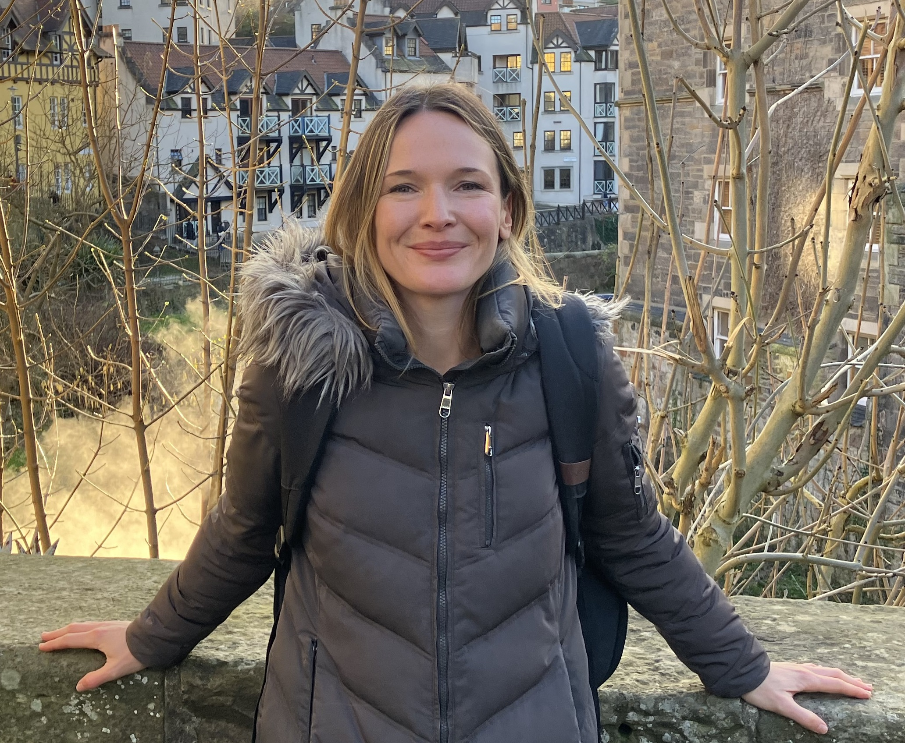

Hello, my name is Maria M. Robinson and I'm a postdoc in Timothy F. Brady's lab at the University of California, San Diego.
My primary research interest is in combining behavioral methods and computational modeling to study memory and visual cognition. I also have a secondary interest in topics in decision-making.
I received my PhD in Psychology at the University of Illinois at Urbana-Champaign, where I worked with Aaron S. Benjamin and collaborated with David E. Irwin as well as Michel Regenwetter.